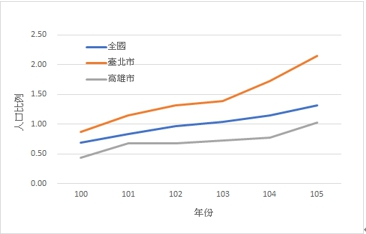

台北市「雙語教學政策推廣至小學一年級」對出國留學比例的影響
第五組：唐明秀（心理三，B06207004）歐崇愷（社工一，B08310054）
宋姿瑾（政治系國關組二， B07302335）李旻（地理一，B08208005）
1.前言
台北市「雙語教學政策推廣至小學一年級」從民國91年開始，我們探討的主題是民國91年實施的雙語政策，會不會對該屆學生的出國留學比例造成影響。因為除了中國，留學到其他國家大都需要英文的能力，因此我們好奇，這個政策會不會使學生留學出國的意願或能力增加。
而當時一年級的小學生（91學年度上學期入學），也就是第一批受到此政策影響的學生，會在102學年度下學期從高中畢業，而我們會針對100年度至105學年度畢業的學生選擇赴境外留學的比例，看102學年度畢業選擇赴境外留學的人數成長是否高於其他年度。
考慮到有太多因素會影響該年的留學比例，我們將地區差異以及公私立差異納入考量，因為這個政策在91年度時只有在台北實施，因此正文會分成台北市( 實驗組 )與高雄市( 對照組 )的比較和台北市( 實驗組 )與全國( 對照組 )的比較，再從這兩項討論國立、縣市立和私立的差異。
除此之外，我們先用100-105年高中生留學人口比例的資料，以年份、地區、高中學制建立了複回歸模型，以此探討出國留學比例中各項因子的影響。為了進一步檢視年份造成的差異是否有部分來自政策造成的影響，我們以交互作用圖來觀察年份與地區的交互作用，並將原本的年份變項轉換為政策實施前後的變項，依此再次進行回歸，觀察政策與地區的交互作用相關係數。
最後，我們探討了過程中可能產生的遺漏變項，以及我們的結論。
。
2.台北市與高雄市出國留學比例的差異
2-1整體差異
整體來看台北市與高雄市的表現，根據教育部每年所公布的《高級中等學校應屆畢業生升學就業概況調查報告》，將100學年度至105學年度間台北市和高雄市普通科畢業生赴國外、大陸就讀人數，佔該年該縣市畢業生的比例，整理成表1。之後再將每兩年的比例相減所得出的變化，整理成表2。
|
（地區＼學年度） |
100 |
101 |
102 |
103 |
104 |
105 |
|
台北市 |
0.87% |
1.15% |
1.32% |
1.39% |
1.72% |
2.15% |
|
+0.28% |
+0.17% |
+0.07% |
+0.33% |
+0.43% |
||
|
高雄市 |
0.44% |
0.68% |
0.68% |
0.72% |
0.77% |
1.03% |
|
+0.24% |
+0 |
+0.04% |
+0.05% |
+0.26% |
表1：台北市、高雄市整體普通科畢業生赴國外、大陸就讀人數之比例
（資料來源：《高級中等學校應屆畢業生升學就業概況調查報告》。教育部統計處。2011~2016。）
102學年度台北市畢業的高中生為第一屆政策實施的學生，然而從表2可以發現，101學年度至102學年度台北市赴海外就讀的人數比例成長僅0.17%，甚至還比前一年的成長幅度還要小，另外在接下來103學年度，台北市赴海外就讀的人數比例成長僅0.07%，是來到了這六年間成長幅度的最低點。等到104學年度，才又回復政策實施前的成長幅度，漲幅大增為0.33%。在高雄市的資料中，我們可以發現大致與台北市的成長幅度變化相同，在102學年度的政策實施前後，成長比例有相當的落差，並且等到105學年度時，才回歸0.26%的漲幅。
從台北市與高雄市整體的情況來看，我們可以得出：台北市並沒有因為實施了政策，而使得102學年度赴海外就讀大學的人數大幅增長，況且100學年度到105學年度的變化走向，與沒有實施政策的高雄市相同，因此可以推測制度的有無對於在台北市或是高雄市的學生，兩者是沒有關聯的。
2-2學校性質差異
根據《高級中等學校應屆畢業生升學就業概況調查報告》，我們還可以進一步將普通科畢業生的來源，區分為國立、縣市立和私立，分別檢視三者在100學年度至105學年度畢業生赴國外、大陸就讀人數，佔該年該類別畢業生的比例，整理成表3。之後再將每兩年的比例相減所得出的變化，整理成表4。
|
（地區＼學年度） |
100 |
101 |
102 |
103 |
104 |
105 |
|
北市國立高中 |
1.99% |
2.39% |
2.74% |
2.43% |
3.33% |
4.65% |
|
+0.4% |
+0.35% |
-0.31% |
+0.9% |
+1.32% |
||
|
高市國立高中 |
0.28% |
0.32% |
0.28% |
0.19% |
0.07% |
0.69% |
|
+0.04% |
-0.04% |
-0.09% |
-0.12% |
+0.62% |
||
|
北市縣市立高中 |
0.66% |
0.85% |
0.93% |
0.78% |
1.11% |
1.37% |
|
+0.19% |
+0.08% |
-0.15% |
+0.33% |
+0.26% |
||
|
高市縣市立高中 |
0.31% |
0.42% |
0.28% |
0.37% |
0.49% |
0.51% |
|
+0.11% |
-0.14% |
+0.09% |
+0.12% |
+0.02% |
||
|
北市私立高中 |
1.2% |
1.71% |
2.22% |
3.02% |
3.51% |
4.12% |
|
+0.51% |
+0.51% |
+0.8% |
+0.49% |
+0.61% |
||
|
高市私立高中 |
0.99% |
1.93% |
2.38% |
2.65% |
3.42% |
4.17% |
|
+0.94% |
+0.45% |
+0.27% |
+0.77% |
+0.75% |
表3：國立、縣市立和私立普通科畢業生赴國外、大陸就讀人數之比例、成長比例。
（資料來源：《高級中等學校應屆畢業生升學就業概況調查報告》。教育部統計處。2011~2016。）
在不區分縣市差異的情況下比較公立與私立高中，從表4可發現私立高中的成長比例在101~102學年度時大約在0.5%的幅度，與公立的成長幅度有一定的差距。然而我們可以發現在102~103學年度，三者大致同時面臨成長幅度低落，甚至有負成長的情況。但整體上來說，我們還是可以歸納：私立高中畢業生赴海外就讀大學的比例高於國立與縣市立高中，只是這種情況同時發生在高雄市與台北市，同時數據也沒有顯示，實施政策後，之後每一年成長比例一定都比前一年還要高。
至於在台北市公立與高雄市公立之間的比較，則可以發現，102學年度從台北市畢業的國立與縣市立高中生，赴海外就讀的比例的確同時維持在正成長，然而成長的幅度相比100~101學年度，成長幅度仍略為縮小，甚至在102~103學年度轉為負成長，之後則同時在104學年度後回復正成長。反觀高雄市的國立與縣市立，在101~102學年度間即遭遇負成長，且成長的幅度也一直比台北小。綜觀來看100~101年與101~102年所反映政策實施前後的影響，在台北市與高雄市的成長比例變化都是下滑的，所以並沒有顯示因為雙語政策，讓台北市的成長幅度大於以往。
總結此第二段落，可以了解其實台北市與高雄市之間，並沒有因為政策的有無，而出現不同的成長變化走向，大致上可說都是在一定的時間成長幅度縮小與增加。在「赴海外就讀人數」上真正產生區別的，是學生是來自於國立、縣市立或私立，然而這個現象同時存在於台北市與高雄市，因此也跟政策較無關係。
3.台北市與全國出國留學比例的差異
3-1台北市年份與公私立的狀況
根據民國100年至105年的統計資料，經過one-way ANOVA分析（表5、表6）可以看出台北境外留學人口比例的「增加量」沒有隨年份、高中公／私立制度變化而顯著改變。在民國100年和105年之間，台北市學生（普通科）境外留學的比例一直呈現緩慢成長，成長幅度最低至102~103年的0.07，最高至104~105年的0.43，制度影響之第一屆（101~102年）的成長幅度為0.17，比100~101年的成長幅度還低。若將普通科分成國立、縣市立、私立三中類型的學校制度來看，依舊可以發現在101~102學年度學生出境留學的的成長比例沒有超過100~101年的成長比例。
|
Df |
Sum Sq |
Mean Sq |
F value |
Pr(>F) |
|
|
year |
4 |
0.6836 |
0.1709 |
1.053 |
0.428 |
|
Residuals |
10 |
1.6237 |
0.1624 |
表5：台北市資料中針對年份one-way ANOVA分析結果
|
Df |
Sum Sq |
Mean Sq |
F value |
Pr(>F) |
|
|
system |
2 |
0.5836 |
0.2918 |
2.032 |
0.174 |
|
Residuals |
12 |
1.7237 |
0.1436 |
表6：台北市資料中針對學制one-way ANOVA分析結果
|
成長比例(%) |
100~101 |
101~102 |
102~103 |
103~104 |
104~105 |
|
台北 |
+0.28 |
+0.17 |
+0.07 |
+0.33 |
+0.43 |
|
全國 |
+0.14 |
+0.14 |
+0.06 |
+0.12 |
+0.16 |
表7：100學年度至105學年度，台北市普通科畢業生境外留學的成長比例
（資料來源：《高級中等學校應屆畢業生升學就業概況調查報告》。教育部統計處。2011~2016。）
|
學年度(民國) |
100~101 |
101~102 |
102~103 |
103~104 |
104~105 |
|
國立 |
0.40 |
0.35 |
-0.31 |
0.90 |
1.32 |
|
縣市立 |
0.19 |
0.08 |
-0.15 |
0.33 |
0.26 |
|
私立 |
0.51 |
0.51 |
0.80 |
0.49 |
0.61 |
表8：100學年度至105學年度，台北市國立、縣市立、私立畢業生境外留學的成長比例
（資料來源：《高級中等學校應屆畢業生升學就業概況調查報告》。教育部統計處。2011~2016。）
3-2全國年份與公私立的狀況
在民國100年和105年之間，全國學生（普通科）境外留學的比例一直呈現緩慢成長，成長幅度最低至102~103年的0.06，最高至104~105年的0.16，制度影響之第一屆（101~102年）的成長幅度為0.14，跟100~101年的成長幅度相同。若將普通科分成國立、縣市立、私立三中類型的學校制度來看，國立與私立的學生出境留學比例，相較於100~101年，確實有提升，可是縣市立的101~102年成長幅度卻比100~101年的低。
|
學年度(民國) |
100~101 |
101~102 |
102~103 |
103~104 |
104~105 |
|
國立 |
0.07 |
0.13 |
-0.03 |
0.04 |
0.22 |
|
縣市立 |
0.11 |
0.04 |
-0.10 |
0.23 |
0.03 |
|
私立 |
0.25 |
0.33 |
0.44 |
0.23 |
0.23 |
表10：100學年度至105學年度，全國國立、縣市立、私立畢業生境外留學的成長比例（單位：%）
（資料來源：《高級中等學校應屆畢業生升學就業概況調查報告》。教育部統計處。2011~2016。）
將台北市國立高中和全國國立高中比較，可以發現除了102~103年以外，其他學年境外留學的比例都以緩慢速率在成長，在101~102年台北國立高中出境留學成長幅度比全國的比例高，可是跟前一年比卻是下降的，由此可知此雙語教育推廣至國小一年級的政策對台北市國立高中出境留學的比例沒有顯著的影響。
將台北市立高中和全國縣市立高中比較，可以發現除了102~103年以外，其他學年境外留學的比例都以緩慢速率在成長，台北市與全國在101~102年的成長幅度都比在100~101年小，台北市學生雖然有受此政策影響，比例卻下降了0.11，可見此政策對台北市立的學生，也就是最主要受影響的族群，出境留學的比例影響不大。
將台北市私立高中和全國私立高中比較，可以發現在100年和105年之間台北市私立高中與全國私立高中出境留學的比例每學年都在成長，在101~102年的成長幅度也沒有特別顯著，成長幅度一直都比公立學校高出許多，可以推測私立學校內部實施的雙語政策以及升學導向政策，對其學生出國留學的比例有影響，這也是許多私立雙語學校主打的教育政策之一，因此就算沒有受到雙語政策的影響，私立學校出境留學的比例依舊逐年上升。
|
（地區＼學年度） |
100~101 |
101~102 |
102~103 |
103~104 |
104~105 |
|
台北市國立高中 |
0.4 |
0.35 |
-0.31 |
0.9 |
1.32 |
|
全國國立高中 |
0.07 |
0.13 |
-0.03 |
0.04 |
0.22 |
|
台北市立高中 |
0.19 |
0.08 |
-0.15 |
0.33 |
0.26 |
|
全國縣市立高中 |
0.11 |
0.04 |
-0.10 |
0.23 |
0.03 |
|
台北市私立高中 |
0.51 |
0.51 |
0.8 |
0.49 |
0.61 |
|
全國私立高中 |
0.25 |
0.33 |
0.44 |
0.23 |
0.23 |
表11：100學年度至105學年度，台北市和全國國立、縣市立、私立畢業生境外留學的成長比例
（資料來源：《高級中等學校應屆畢業生升學就業概況調查報告》。教育部統計處。2011~2016。）
全國和台北相較時的境外留學「人口比例」有因為地區、國立/縣市立/私立而顯著變動。有交互作用，也就是地區差異可能會導致國立/縣市立/私立造成的效果不同。
4.統計數據與迴歸模型
本研究續用複迴歸分析來檢視:地區、年份、高中的學制對於出國留學人口比例的影響。由於地區是類別變項，因此設定虛擬變項(dummyregion1,dummyregion2)，考量到台北是我們關注的對象，因此設為(0,0)作為基準點，全國為(0,1)、高雄為(1,0)；學制同為類別變項，因此設定虛擬變項(dummysystem1,dummysystem2)，由於學制上私立和公立差距較大，因此私立作為基準點設為(0,0)，縣市立為(0,1)、國立為(1,0)。
分析結果顯示,整體模型達顯著水準(p<0.001)，每個變項的影響力也達到顯著。
圖1：
|
Estimate |
Std. Error |
t value |
Pr(>|t|) |
||
|
(Intercept) |
-22.6596 |
5.54208 |
-4.089 |
0.000164 |
*** |
|
dummyregion1 |
-1.07000 |
0.22603 |
-4.734 |
1.98e-05 |
*** |
|
dummyregion2 |
-1.05833 |
0.22603 |
-4.682 |
2.36e-05 |
*** |
|
dummysystem1 |
-1.82556 |
0.22603 |
-8.077 |
1.69e-10 |
*** |
|
dummysystem2 |
-1.16444 |
0.22603 |
-5.152 |
4.80e-06 |
*** | ！
*表示 10% 之統計顯著性, **表示 5% 之統計顯著性,***表示1% 之統計顯著性。Residual standard error: 0.6781 on 48 degrees of freedom,Multiple R-squared: 0.7112, Adjusted R-squared: 0.6811,F-statistic: 23.64 on 5 and 48 DF, p-value: 6.667e-12
5 .結論
我們無法證明多兩年的英語教育會導致出國留學的比例增加，因此無論教育部推動「雙語教學政策推廣至小學一年級」此一政策的最初目的為何，他們不需要擔心此一政策會導致出國留學人數顯著上升。
不過，我們也發現了，隨著公私立學校與台北高雄的不同選擇，出國留學比例有顯著的不同，
而就本文的不足之處，我們有考量到私立小學在執行英語政策上可能公立小學不一致，但根據，私立小學的學生數量較少（107學年度只有10間，佔6.6%），所以我們決定忽略此項變因。
接下來是台北與高雄分析時的遺漏變數。根據「行政院主計總處台灣家庭收支訪問調查統計」中顯示，台北人在經歷能力上是優於高雄人的，而出國讀書，相較於在台學習，是一見花費較高的事情，從 USEAS 美國教育資訊中心便可略知一二，美國公立大學一年的花費最便宜也需要花到10,000美金，是高於台大的。我們設高雄人與台北人願意花在教育上的錢佔所得比例或扣除基本開銷後的佔比是相同，納較高的所得也意味著較高的願付價格，也就是說，在出國留學開銷固定的情況下，台北人會有較高機率有較多的人能有能力負擔的起外國學費，這可能也是導致台北人出國比例較高的原因之一。而一些國際上的大事件也會造成台北與高雄分別不同的所得跌漲幅，而這是我們沒有考量進去的變數。
此外，我們不確定政策實施時當時小二的學生是否會從小二開始修習英文，這可能是導致結果不顯著的原因，因為一年的英語教育可能不會使出國進修的意願增加。
除此之外，大學品質與評價可能會影響學生選擇大學的變因，如果國內大學排名下降，學生在國內就讀大學的推力也會增加，但我們並沒有把大學的總體評價與品質變化的納入分析，是為遺漏變項。
6.參考資料
1.教育部統計處，2013，《100學年度公私立高中職應屆畢業生升學就業概況調查》，99-100頁，http://stats.moe.gov.tw/files/investigate/high_graduate/100/100_graduate.pdf，2019年12月9日。
2.教育部統計處，2014，《101學年度公私立高中職應屆畢業生升學就業概況調查》，109-110頁，http://stats.moe.gov.tw/files/investigate/high_graduate/101/101_graduate.pdf，2019年12月9日。
3.教育部統計處，2015，《102學年度公私立高中職應屆畢業生升學就業概況調查》，99-100頁，http://stats.moe.gov.tw/files/investigate/high_graduate/102/102_graduate.pdf，2019年12月9日。
4.教育部統計處，2016，《103學年度高級中等學校應屆畢業生升學就業概況調查》，82-83頁，http://stats.moe.gov.tw/files/investigate/high_graduate/103/103_graduate.pdf，2019年12月9日。
5.教育部統計處，2017，《104學年度高級中等學校應屆畢業生升學就業概況調查》，82-83頁，http://stats.moe.gov.tw/files/investigate/high_graduate/104/104_graduate.pdf，2019年12月9日。
6.教育部統計處，2018，《105學年度高級中等學校應屆畢業生升學就業概況調查》，59-60頁，http://stats.moe.gov.tw/files/investigate/high_graduate/105/105_graduate.pdf，2019年12月9日。
7.台北市政府教育局，表格:各級學校學生數-依隸屬別(90學年度以後)，http://statistic.tp.edu.tw/Dialog/varval.asp?ma=EC000a05A&ti=%A6U%AF%C5%BE%C7%AE%D5%BE%C7%A5%CD%BC%C6-%A8%CC%C1%F5%C4%DD%A7O(90%BE%C7%A6~%AB%D7%A5H%AB%E1)&path=/PXfile/CountyStatistics&lang=9&strList=L，2019年12月11日。
.https://www.useas.com.tw/usstudy-costs.php
9.行政院主計總處，2019，家庭收支調查統計表，